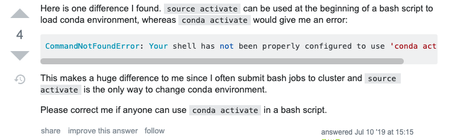

conda环境切换
安装
conda 只能通过安装anaconda或者miniconda获得
命令行切换环境
配置：macOS Catalina 10.15.4
切换环境的旧命令为
1 | source activate env_name |
现在新的命令为
1 | conda activate env_name |
但是在使用中发现，最开始直接使用conda activate env_name时会报错，提示需要进行 conda init来初始化shell。conda init会在~/.bash_profile中插入配置代码。之后每次打开terminal时，会直接进入env ‘base’中。这时退出env再使用conda activate env_name不会出错。 另一种方法是先使用source activate来初始化conda环境。

shell解释器
一般来说，可以在.bash_profile中对shell的bash解释器进行配置，使用source ~/.bash_profile使之立即生效。但是如果是其他的解释器，会导致配置似乎没有生效。可以通过命令查看当前使用的是哪个解释器。
1 | echo $SHELL |
我的terminal的默认解释器是zsh，所以应该在~/.zshrc中加入一行source ~/.bash_profile。
Original author: Lixin Xu
Original link: https://xlx-nju.github.io/2020/07/27/conda环境切换/
Copyright Notice: Please indicate the source of the reprint (must retain the author's signature and link)